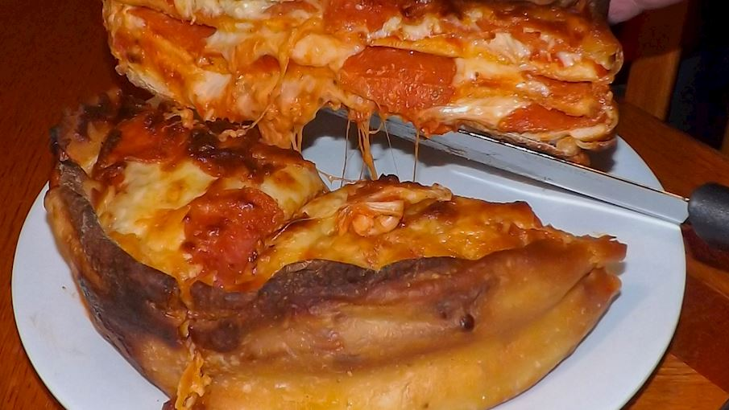

Pizza cake

The infamous pizza cake came to life in April of 2014 when a Canadian-based chain Boston Pizza started a campaign called Pizza Game Changers, where the public was called in to vote on the next big thing when it comes to pizza-related products.
Ingredients:
- 2 cans (13.8 oz) refrigerated Pillsbury™ Classic Crust Pizza Crust
- 1 1/2 cups Muir Glen™ organic pizza sauce (from 15-oz can)
- 3 cups shredded mozzarella cheese (12 oz)
- 1 cup sliced pepperoni
- 1 tablespoon butter, if desired
Steps:
- Heat oven to 400°F. Lightly spray large cookie sheet with cooking spray or drizzle with olive oil.
- Measure diameter of tall-sided ovenproof pan. (Pan used was 6-inch in diameter with 4-inch high side.) Unroll 1 can of dough onto work surface; press out into thin layer. Cut out 3 (6-inch) rounds; place on cookie sheet. Bake 8 minutes. Remove from cookie sheet to cooling rack; cool.
- Unroll remaining can of dough; cut 2 additional (6-inch) rounds from long edge of dough, leaving opposite side untouched. Place rounds on cooled cookie sheet. Bake 8 minutes. Remove from cookie sheet; cool.
- Meanwhile, line pan with cooking parchment paper so that ends of paper stick up and out of pan. Cut long strip of dough at least 1/2 inch wider than height of pan. Carefully drape long strip of dough around inside edge of pan to line, leaving 1/2 inch hanging over outside edge of pan and bottom of pan open. Pinch seam to seal.
- Carefully place 1 partially baked crust round in bottom of pan. Spread pizza sauce over crust; top with pepperoni slices and sprinkle with mozzarella cheese (when cheese melts, crust above will stick to it). Repeat to make 3 more layers. For top layer, place last crust over cheese; sprinkle with remaining cheese and arrange remaining pepperoni on top.
- Fold overhanging dough over top layer of pizza cake to make a raised crust edge.
- Bake 20 to 25 minutes or until dough around pizza cake is fully cooked. (To test, carefully pull up parchment paper to raise pizza cake out of pan.) Once completely baked, cool in pan 5 minutes. Remove pizza cake from pan; brush crust with butter. Use sharp knife to cut slices like you would a cake.